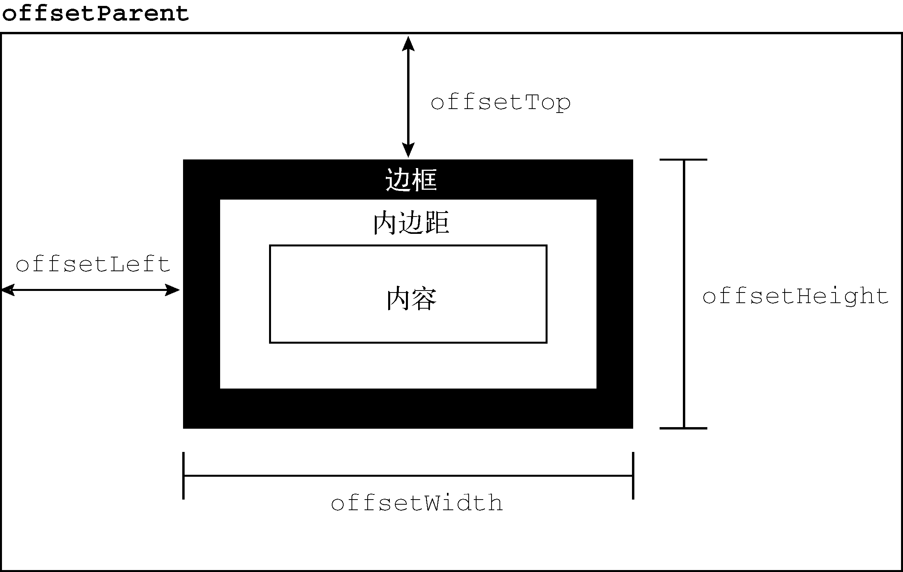
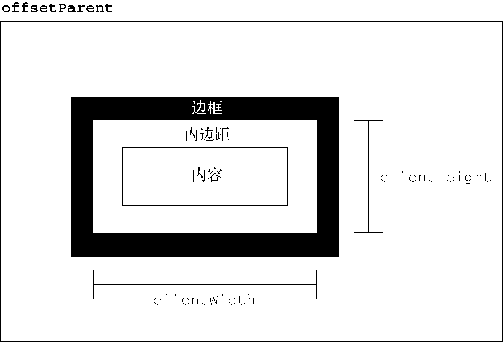
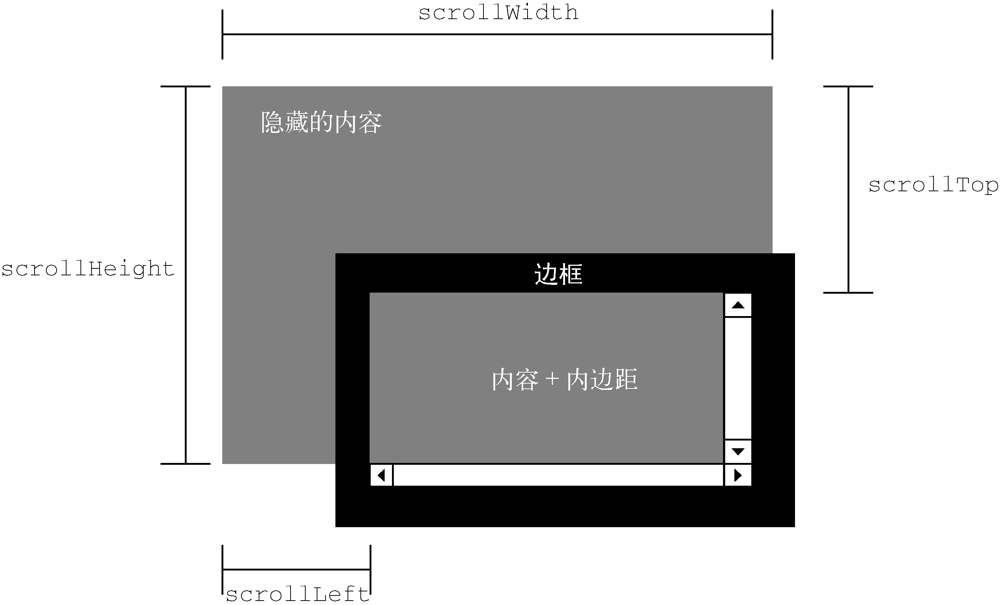
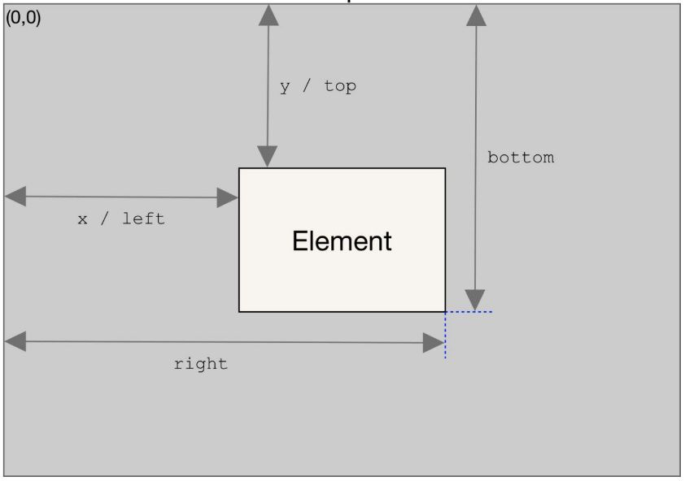

HTML中的样式有3种定义方式：外部样式表（通过<link>元素）、文档样式表（使用<style>元素）和元素特定样式（使用style属性）。DOM2 Style为这3种应用样式的机制都提供了API。
任何支持style属性的HTML元素在JavaScript中都会有一个对应的style属性。这个style属性是CSSStyleDeclaration类型的实例，其中包含通过HTML
style属性为元素设置的所有样式信息，但不包含通过层叠机制从文档样式和外部样式中继承来的样式。HTML
style属性中的CSS属性在JavaScript
style对象中都有对应的属性。因为CSS属性名使用连字符表示法（用连字符分隔两个单词，如background-image），所以在JavaScript中这些属性必须转换为驼峰大小写形式（如backgroundImage）。下表给出了几个常用的CSS属性与style对象中等价属性的对比。
|
CSS属性 |
JavaScript属性 |
|---|---|
|
|
|
|
|
|
|
|
|
|
|
|
大多数属性名会这样直接转换过来。但有一个CSS属性名不能直接转换，它就是float。因为float是JavaScript的保留字，所以不能用作属性名。DOM2 Style规定它在style对象中对应的属性应该是cssFloat。
任何时候，只要获得了有效DOM元素的引用，就可以通过JavaScript来设置样式。来看下面的例子：
let mydiv = document.getelementbyid("mydiv");
// 设置背景颜色
mydiv.style.backgroundcolor = "red";
// 修改大小
mydiv.style.width = "100px";
mydiv.style.height = "200px";
// 设置边框
mydiv.style.border = "1px solid black";像这样修改样式时，元素的外观会自动更新。
注意 在标准模式下，所有尺寸都必须包含单位。在混杂模式下，可以把
style.width设置为"20"，相当于"20px"。如果是在标准模式下，把style.width设置为"20"会被忽略，因为没有单位。实践中，最好一直加上单位。
通过style属性设置的值也可以通过style对象获取。比如下面的HTML：
<div id="mydiv" style="background-color: blue; width: 10px; height: 25px"></div>这个元素style属性的值可以像这样通过代码获取：
console.log(mydiv.style.backgroundcolor); // "blue"
console.log(mydiv.style.width); // "10px"
console.log(mydiv.style.height); // "25px"如果元素上没有style属性，则style对象包含所有可能的CSS属性的空值。
DOM样式属性和方法
DOM2 Style规范也在style对象上定义了一些属性和方法。这些属性和方法提供了元素style属性的信息并支持修改，列举如下。
cssText，包含style属性中的CSS代码。length，应用给元素的CSS属性数量。parentRule，表示CSS信息的CSSRule对象（下一节会讨论CSSRule类型）。getPropertyCSSValue(propertyName)，返回包含CSS属性
propertyName
值的CSSValue对象（已废弃）。getPropertyPriority(propertyName)，如果CSS属性
propertyName
使用了!important则返回"important"，否则返回空字符串。getPropertyValue(propertyName)，返回属性
propertyName
的字符串值。item(index)，返回索引为
index
的CSS属性名。removeProperty(propertyName)，从样式中删除CSS属性
propertyName
。setProperty(propertyName, value, priority)，设置CSS属性
propertyName
的值为
value
，
priority
是"important"或空字符串。通过cssText属性可以存取样式的CSS代码。在读模式下，cssText返回style属性CSS代码在浏览器内部的表示。在写模式下，给cssText赋值会重写整个style属性的值，意味着之前通过style属性设置的属性都会丢失。比如，如果一个元素通过style属性设置了边框，而赋给cssText属性的值不包含边框，则元素的边框会消失。下面的例子演示了cssText的使用：
mydiv.style.csstext = "width: 25px; height: 100px; background-color: green";
console.log(mydiv.style.csstext);设置cssText是一次性修改元素多个样式最快捷的方式，因为所有变化会同时生效。
length属性是跟item()方法一起配套迭代CSS属性用的。此时，style对象实际上变成了一个集合，也可以用中括号代替item()取得相应位置的CSS属性名，如下所示：
for (let i = 0, len = mydiv.style.length; i < len; i++) {
console.log(mydiv.style[i]); // 或者用mydiv.style.item(i)
}使用中括号或者item()都可以取得相应位置的CSS属性名（"background-color"，不是"backgroundColor"）。这个属性名可以传给getPropertyValue()以取得属性的值，如下面的例子所示：
let prop, value, i, len;
for (i = 0, len = mydiv.style.length; i < len; i++) {
prop = mydiv.style[i]; // 或者用mydiv.style.item(i)
value = mydiv.style.getpropertyvalue(prop);
console.log(`prop: ${value}`);
}
getPropertyValue()方法返回CSS属性值的字符串表示。如果需要更多信息，则可以通过getPropertyCSSValue()获取CSSValue对象。这个对象有两个属性：cssText和cssValueType。前者的值与getPropertyValue()方法返回的值一样；后者是一个数值常量，表示当前值的类型（0代表继承的值，1代表原始值，2代表列表，3代表自定义值）。1下面的代码演示了如何输出CSS属性值和值类型：
let prop, value, i, len;
for (i = 0, len = mydiv.style.length; i < len; i++) {
prop = mydiv.style[i]; // alternately, mydiv.style.item(i)
value = mydiv.style.getpropertycssvalue(prop);
console.log(`prop: ${value.csstext} (${value.cssvaluetype})`);
}
removeProperty()方法用于从元素样式中删除指定的CSS属性。使用这个方法删除属性意味着会应用该属性的默认（从其他样式表层叠继承的）样式。例如，可以像下面这样删除style属性中设置的border样式：
mydiv.style.removeproperty("border");在不确定给定CSS属性的默认值是什么的时候，可以使用这个方法。只要从style属性中删除，就可以使用默认值。
计算样式
style对象中包含支持style属性的元素为这个属性设置的样式信息，但不包含从其他样式表层叠继承的同样影响该元素的样式信息。DOM2 Style在document.defaultView上增加了getComputedStyle()方法。这个方法接收两个参数：要取得计算样式的元素和伪元素字符串（如":after"）。如果不需要查询伪元素，则第二个参数可以传null。getComputedStyle()方法返回一个CSSStyleDeclaration对象（与style属性的类型一样），包含元素的计算样式。假设有如下HTML页面：
<!doctype html>
<html>
<head>
<title>computed styles example</title>
<style type="text/css">
#mydiv {
background-color: blue;
width: 100px;
height: 200px;
}
</style>
</head>
<body>
<div id="mydiv" style="background-color: red; border: 1px solid black"></div>
</body>
</html>这里的<div>元素从文档样式表（<style>元素）和自己的style属性获取了样式。此时，这个元素的style对象中包含backgroundColor和border属性，但不包含（通过样式表规则应用的）width和height属性。下面的代码从这个元素获取了计算样式：
let mydiv = document.getelementbyid("mydiv");
let computedstyle = document.defaultview.getcomputedstyle(mydiv, null);
console.log(computedstyle.backgroundcolor); // "red"
console.log(computedstyle.width); // "100px"
console.log(computedstyle.height); // "200px"
console.log(computedstyle.border); // "1px solid black"（在某些浏览器中）在取得这个元素的计算样式时，得到的背景颜色是"red"，宽度为"100px"，高度为"200px"。背景颜色不是"blue"，因为元素样式覆盖了它。border属性不一定返回样式表中实际的border规则（某些浏览器会）。这种不一致性是因浏览器解释简写样式的方式造成的，比如border实际上会设置一组别的属性。在设置border时，实际上设置的是4条边的线条宽度、颜色和样式（border-left-width、border-top-color、border-bottom-style等）。因此，即使computedStyle.border在所有浏览器中都不会返回值，computedStyle.borderLeftWidth也一定会返回值。
注意 浏览器虽然会返回样式值，但返回值的格式不一定相同。比如，Firefox和Safari会把所有颜色值转换为RGB格式（如红色会变成
rgb(255,0,0)），而Opera把所有颜色转换为十六进制表示法（如红色会变成#ff0000）。因此在使用getComputedStyle()时一定要多测试几个浏览器。
关于计算样式要记住一点，在所有浏览器中计算样式都是只读的，不能修改getComputedStyle()方法返回的对象。而且，计算样式还包含浏览器内部样式表中的信息。因此有默认值的CSS属性会出现在计算样式里。例如，visibility属性在所有浏览器中都有默认值，但这个值因实现而不同。有些浏览器会把visibility的默认值设置为"visible"，而另一些将其设置为"inherit"。不能假设CSS属性的默认值在所有浏览器中都一样。如果需要元素具有特定的默认值，那么一定要在样式表中手动指定。
1不过，getPropertyCSSValue()方法已经被废弃，虽然可能有浏览器还支持，但随时有可能被删除。建议开发中使用getPropertyValue()。——译者注
CSSStyleSheet类型表示CSS样式表，包括使用<link>元素和通过<style>元素定义的样式表。注意，这两个元素本身分别是HTMLLinkElement和HTMLStyleElement。CSSStyleSheet类型是一个通用样式表类型，可以表示以任何方式在HTML中定义的样式表。另外，元素特定的类型允许修改HTML属性，而CSSStyleSheet类型的实例则是一个只读对象（只有一个属性例外）。
CSSStyleSheet类型继承StyleSheet，后者可用作非CSS样式表的基类。以下是CSSStyleSheet从StyleSheet继承的属性。
disabled，布尔值，表示样式表是否被禁用了（这个属性是可读写的，因此将它设置为true会禁用样式表）。href，如果是使用<link>包含的样式表，则返回样式表的URL，否则返回null。media，样式表支持的媒体类型集合，这个集合有一个length属性和一个item()方法，跟所有DOM集合一样。同样跟所有DOM集合一样，也可以使用中括号访问集合中特定的项。如果样式表可用于所有媒体，则返回空列表。ownerNode，指向拥有当前样式表的节点，在HTML中要么是<link>元素要么是<style>元素（在XML中可以是处理指令）。如果当前样式表是通过@import被包含在另一个样式表中，则这个属性值为null。parentStyleSheet，如果当前样式表是通过@import被包含在另一个样式表中，则这个属性指向导入它的样式表。title，ownerNode的title属性。type，字符串，表示样式表的类型。对CSS样式表来说，就是"text/css"。上述属性里除了disabled，其他属性都是只读的。除了上面继承的属性，CSSStyleSheet类型还支持以下属性和方法。
cssRules，当前样式表包含的样式规则的集合。ownerRule，如果样式表是使用@import导入的，则指向导入规则；否则为null。deleteRule(index)，在指定位置删除cssRules中的规则。insertRule(rule,
index)，在指定位置向cssRules中插入规则。
document.styleSheets表示文档中可用的样式表集合。这个集合的length属性保存着文档中样式表的数量，而每个样式表都可以使用中括号或item()方法获取。来看这个例子：
let sheet = null;
for (let i = 0, len = document.stylesheets.length; i < len; i++) {
sheet = document.stylesheets[i];
console.log(sheet.href);
}以上代码输出了文档中每个样式表的href属性（<style>元素没有这个属性）。
document.styleSheets返回的样式表可能会因浏览器而异。所有浏览器都会包含<style>元素和rel属性设置为"stylesheet"的<link>元素。IE、Opera、Chrome也包含rel属性设置为"alternate stylesheet"的<link>元素。
通过<link>或<style>元素也可以直接获取CSSStyleSheet对象。DOM在这两个元素上暴露了sheet属性，其中包含对应的CSSStyleSheet对象。
CSS规则
CSSRule类型表示样式表中的一条规则。这个类型也是一个通用基类，很多类型都继承它，但其中最常用的是表示样式信息的CSSStyleRule（其他CSS规则还有@import、@font-face、@page和@charset等，不过这些规则很少需要使用脚本来操作）。以下是CSSStyleRule对象上可用的属性。
cssText，返回整条规则的文本。这里的文本可能与样式表中实际的文本不一样，因为浏览器内部处理样式表的方式也不一样。Safari始终会把所有字母都转换为小写。parentRule，如果这条规则被其他规则（如@media）包含，则指向包含规则，否则就是null。parentStyleSheet，包含当前规则的样式表。selectorText，返回规则的选择符文本。这里的文本可能与样式表中实际的文本不一样，因为浏览器内部处理样式表的方式也不一样。这个属性在Firefox、Safari、Chrome和IE中是只读的，在Opera中是可以修改的。style，返回CSSStyleDeclaration对象，可以设置和获取当前规则中的样式。type，数值常量，表示规则类型。对于样式规则，它始终为1。在这些属性中，使用最多的是cssText、selectorText和style。cssText属性与style.cssText类似，不过并不完全一样。前者包含选择符文本和环绕样式声明的大括号，而后者则只包含样式声明（类似于元素上的style.cssText）。此外，cssText是只读的，而style.cssText可以被重写。
多数情况下，使用style属性就可以实现操作样式规则的任务了。这个对象可以像每个元素上的style对象一样，用来读取或修改规则的样式。比如下面这个CSS规则：
div.box {
background-color: blue;
width: 100px;
height: 200px;
}假设这条规则位于页面中的第一个样式表中，而且是该样式表中唯一一条CSS规则，则下列代码可以获取它的所有信息：
let sheet = document.stylesheets[0];
let rules = sheet.cssrules || sheet.rules; // 取得规则集合
let rule = rules[0]; // 取得第一条规则
console.log(rule.selectortext); // "div.box"
console.log(rule.style.csstext); // 完整的css代码
console.log(rule.style.backgroundcolor); // "blue"
console.log(rule.style.width); // "100px"
console.log(rule.style.height); // "200px"使用这些接口，可以像确定元素style对象中包含的样式一样，确定一条样式规则的样式信息。与元素的场景一样，也可以修改规则中的样式，如下所示：
let sheet = document.stylesheets[0];
let rules = sheet.cssrules || sheet.rules; // 取得规则集合
let rule = rules[0]; // 取得第一条规则
rule.style.backgroundcolor = "red"注意，这样修改规则会影响到页面上所有应用了该规则的元素。如果页面上有两个<div>元素有"box"类，则这两个元素都会受到这个修改的影响。
创建规则
DOM规定，可以使用insertRule()方法向样式表中添加新规则。这个方法接收两个参数：规则的文本和表示插入位置的索引值。下面是一个例子：
sheet.insertrule("body { background-color: silver }", 0); // 使用dom方法这个例子插入了一条改变文档背景颜色的规则。这条规则是作为样式表的第一条规则（位置0）插入的，顺序对规则层叠是很重要的。
虽然可以这样添加规则，但随着要维护的规则增多，很快就会变得非常麻烦。这时候，更好的方式是使用第14章介绍的动态样式加载技术。
删除规则
支持从样式表中删除规则的DOM方法是deleteRule()，它接收一个参数：要删除规则的索引。要删除样式表中的第一条规则，可以这样做：
sheet.deleterule(0); // 使用dom方法与添加规则一样，删除规则并不是Web开发中常见的做法。考虑到可能影响CSS层叠的效果，删除规则时要慎重。
本节介绍的属性和方法并不是DOM2 Style规范中定义的，但与HTML元素的样式有关。DOM一直缺乏页面中元素实际尺寸的规定。IE率先增加了一些属性，向开发者暴露元素的尺寸信息。这些属性现在已经得到所有主流浏览器支持。
偏移尺寸
第一组属性涉及偏移尺寸（offset dimensions），包含元素在屏幕上占用的所有视觉空间。元素在页面上的视觉空间由其高度和宽度决定，包括所有内边距、滚动条和边框（但不包含外边距）。以下4个属性用于取得元素的偏移尺寸。
offsetHeight，元素在垂直方向上占用的像素尺寸，包括它的高度、水平滚动条高度（如果可见）和上、下边框的高度。offsetLeft，元素左边框外侧距离包含元素左边框内侧的像素数。offsetTop，元素上边框外侧距离包含元素上边框内侧的像素数。offsetWidth，元素在水平方向上占用的像素尺寸，包括它的宽度、垂直滚动条宽度（如果可见）和左、右边框的宽度。其中，offsetLeft和offsetTop是相对于包含元素的，包含元素保存在offsetParent属性中。offsetParent不一定是parentNode。比如，<td>元素的offsetParent是作为其祖先的<table>元素，因为<table>是节点层级中第一个提供尺寸的元素。图16-1展示了这些属性代表的不同尺寸。

图 16-1
要确定一个元素在页面中的偏移量，可以把它的offsetLeft和offsetTop属性分别与offsetParent的相同属性相加，一直加到根元素。下面是一个例子：
function getelementleft(element) {
let actualleft = element.offsetleft;
let current = element.offsetparent;
while (current !== null) {
actualleft += current.offsetleft;
current = current.offsetparent;
}
return actualleft;
}
function getelementtop(element) {
let actualtop = element.offsettop;
let current = element.offsetparent;
while (current !== null) {
actualtop += current.offsettop;
current = current.offsetparent;
}
return actualtop;
}这两个函数使用offsetParent在DOM树中逐级上溯，将每一级的偏移属性相加，最终得到元素的实际偏移量。对于使用CSS布局的简单页面，这两个函数是很精确的。而对于使用表格和内嵌窗格的页面布局，它们返回的值会因浏览器不同而有所差异，因为浏览器实现这些元素的方式不同。一般来说，包含在<div>元素中所有元素都以<body>为其offsetParent，因此getElementleft()和getElementTop()返回的值与offsetLeft和offsetTop返回的值相同。
注意 所有这些偏移尺寸属性都是只读的，每次访问都会重新计算。因此，应该尽量减少查询它们的次数。比如把查询的值保存在局量中，就可以避免影响性能。
客户端尺寸
元素的客户端尺寸（client dimensions）包含元素内容及其内边距所占用的空间。客户端尺寸只有两个相关属性：clientWidth和clientHeight。其中，clientWidth是内容区宽度加左、右内边距宽度，clientHeight是内容区高度加上、下内边距高度。图16-2形象地展示了这两个属性。

图 16-2
客户端尺寸实际上就是元素内部的空间，因此不包含滚动条占用的空间。这两个属性最常用于确定浏览器视口尺寸，即检测document.documentElement的clientWidth和clientHeight。这两个属性表示视口（<html>或<body>元素）的尺寸。
注意 与偏移尺寸一样，客户端尺寸也是只读的，而且每次访问都会重新计算。
滚动尺寸
最后一组尺寸是滚动尺寸（scroll dimensions），提供了元素内容滚动距离的信息。有些元素，比如<html>无须任何代码就可以自动滚动，而其他元素则需要使用CSS的overflow属性令其滚动。滚动尺寸相关的属性有如下4个。
scrollHeight，没有滚动条出现时，元素内容的总高度。scrollLeft，内容区左侧隐藏的像素数，设置这个属性可以改变元素的滚动位置。scrollTop，内容区顶部隐藏的像素数，设置这个属性可以改变元素的滚动位置。scrollWidth，没有滚动条出现时，元素内容的总宽度。图16-3展示了这些属性的含义。

图 16-3
scrollWidth和scrollHeight可以用来确定给定元素内容的实际尺寸。例如，<html>元素是浏览器中滚动视口的元素。因此，document.documentElement.scrollHeight就是整个页面垂直方向的总高度。
scrollWidth和scrollHeight与clientWidth和clientHeight之间的关系在不需要滚动的文档上是分不清的。如果文档尺寸超过视口尺寸，则在所有主流浏览器中这两对属性都不相等，scrollWidth和scollHeight等于文档内容的宽度，而clientWidth和clientHeight等于视口的大小。
scrollLeft和scrollTop属性可以用于确定当前元素滚动的位置，或者用于设置它们的滚动位置。元素在未滚动时，这两个属性都等于0。如果元素在垂直方向上滚动，则scrollTop会大于0，表示元素顶部不可见区域的高度。如果元素在水平方向上滚动，则scrollLeft会大于0，表示元素左侧不可见区域的宽度。因为这两个属性也是可写的，所以把它们都设置为0就可以重置元素的滚动位置。下面这个函数检测元素是不是位于顶部，如果不是则把它滚动回顶部：
function scrolltotop(element) {
if (element.scrolltop != 0) {
element.scrolltop = 0;
}
}这个函数使用scrollTop获取并设置值。
确定元素尺寸
浏览器在每个元素上都暴露了getBoundingClientRect()方法，返回一个DOMRect对象，包含6个属性：left、top、right、bottom、height和width。这些属性给出了元素在页面中相对于视口的位置。图16-42展示了这些属性的含义。

图 16-4
2这张插图为译者补充，图片来源为MDN文档的Element.getBoundingClientRect()英文版页面。——译者注